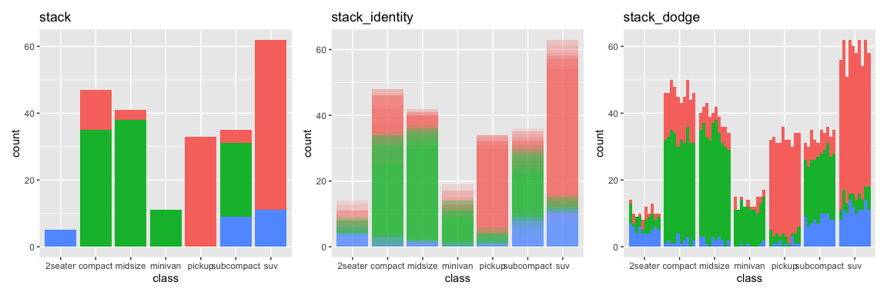
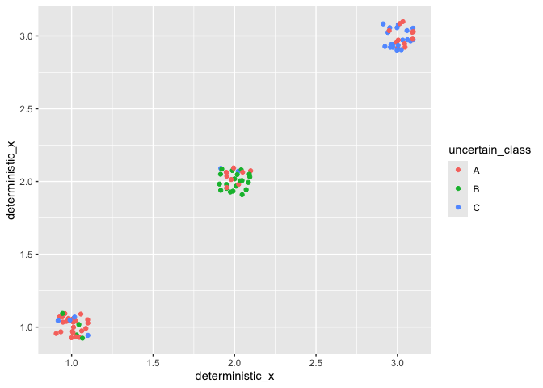

For information to be passed into ggplot2, or any visualisation software, it usually needs to be expressed as data. This restriction prevents us from visualising inputs that are too uncertain to be expressed as single data values. This can include things like estimates, model predictions, bounded values or observations with large measurement error. While there is a wealth of visualisation software designed to address this problem, these solutions are often limited to specific plots or data types with bespoke syntax. The lack of generality has significantly restricted the adoption of uncertainty visualisation by the broader statistics community, and established uncertainty as something to be ignored.
This problem is alleviated by ggdibbler. Now, users can simply replace a vector of data with a vector of random variables created using distributional and visualise these types of inputs using the software. Any quantifiable uncertainty can be expressed as a distribution, and any distribution can be passed to an existing ggplot2 geom with ggdibbler. Unlike other visualisation approaches, users are not limited by data type. You can pass continuous, discrete, spatial (i.e. sf objects), characters, factors, or even other distributions to ggdibbler. Users are also free to pass any type of distribution to the software. Theoretical, empirical, truncated, and mixed distributions are all allowed by distributional and therefore accepted by ggdibbler. No matter what you pass, ggdibbler will incorporate the uncertainty into your graphic as noise and allows you to see how the variation changes the conclusions you take away from your graphics.
The power of ggdibbler is in its simplicity and flexibility. There is no need to learn specific package syntax or new functions and you can pass a distribution to ANY combination of aesthetics in ggplot2. It is a universal, exploratory tool for uncertainty visualisation.
Installation
You can install the stable version of ggdibbler from CRAN with:
install.packages("ggdibbler")or you can install the development version of ggdibbler from GitHub with:
# install.packages("pak")
pak::pak("harriet-mason/ggdibbler")Examples
To make a ggdibbler visualisation you just replace a geom_* function from ggplot2 with geom_*_sample, and replace your deterministic variable with a distributional variable, and you get an uncertainty visualisation. It is that simple.
You will often run into an over plotting problem when visualising uncertainty, so using a jitter or adjusting the alpha value will allow you to see all outcomes (rather than just the final draw). In many cases the over plotting is managed automatically with the nested positioning system (such as in geom_sf or geom_tile), but it is still a good idea to always set alpha < 1 when making a plot for the first time to ensure you aren’t accidentally obfuscating some of the outcomes.
Below are some examples of uncertain ggdibbler plots alongside their deterministic ggplot2 counterpart. The only parameters added by ggdibbler are the times argument (which decides how many samples to draw from the distribution), and the seed argument (which allows you to keep the same random draw across multiple layers). Otherwise, the parameters and syntax are identical to that of a standard ggplot.
library(distributional)
library(dplyr)
library(sf)
library(ggplot2)
library(ggdibbler)
library(patchwork)
set.seed(1343)
p1 <- ggplot(faithfuld, aes(waiting, eruptions, z = density)) +
ggtitle("ggplot2") +
geom_contour()
p2 <- ggplot(uncertain_faithfuld, aes(waiting, eruptions, z = density0))+
ggtitle("ggdibbler") +
geom_contour_sample(alpha=0.2)
p1 + p2
This raster plot below provides an example of the nested position system implemented in ggdibbler. By default a raster plot will have it’s position set to position = "identity_dodge" where the position associated with the original (i.e. ggplot2 version) of the plot is an identity, and the position adjustment specific to the draws is a dodge.
p1 <- ggplot(faithfuld, aes(waiting, eruptions)) +
geom_raster(aes(fill = density)) +
ggtitle("ggplot2")+
theme(legend.position = "bottom")
p2 <- ggplot(uncertain_faithfuld, aes(waiting, eruptions)) +
geom_raster_sample(aes(fill = density)) +
ggtitle("ggdibbler some error")+
theme(legend.position = "bottom")
p3 <- ggplot(uncertain_faithfuld, aes(waiting, eruptions)) +
geom_raster_sample(aes(fill = density2)) +
ggtitle("ggdibbler more error")+
theme(legend.position = "bottom")
p1 + p2 + p3
You can mix and match positions to get some interesting looking graphics that all converge to the same ggplot2 plot as the variance approaches zero.
p1 <- ggplot(mpg, aes(class)) +
geom_bar_sample(aes(fill = drv),
position = "stack")+
theme(legend.position="none")+
ggtitle("stack")
p2 <- ggplot(uncertain_mpg, aes(class)) +
geom_bar_sample(aes(fill = drv), alpha=0.15,
position = "stack_identity")+
theme(legend.position="none")+
ggtitle("stack_identity")
p3 <- ggplot(uncertain_mpg, aes(class)) +
geom_bar_sample(aes(fill = drv),
position = "stack_dodge")+
theme(legend.position="none")+
ggtitle("stack_dodge")
p1 | p2 | p3
The only geoms that implement new positioning (i.e. not nested versions of existing ggplot2 positions) are geom_sf_sample, and geom_pollygon_sample. These geometries use the subdivide position which is inspired by the pixel map implemented in Vizumap.
# Make average summary of data
toy_temp_mean <- toy_temp |>
dplyr::group_by(county_name) |>
summarise(temp_mean = mean(recorded_temp))
# plot it
p1 <- ggplot(toy_temp_mean) +
geom_sf(aes(geometry=county_geometry, fill=temp_mean), linewidth=0.7) +
scale_fill_distiller(palette = "OrRd") +
labs(fill="temp")+
ggtitle("ggplot2")+
theme(legend.position = "bottom")
# sample map
p2 <- toy_temp_dist |>
ggplot() +
geom_sf_sample(aes(geometry = county_geometry, fill=temp_dist), linewidth=0, times=50) +
geom_sf(aes(geometry = county_geometry), fill=NA, linewidth=0.7) +
scale_fill_distiller(palette = "OrRd") +
labs(fill="temp")+
ggtitle("ggdibbler")+
theme(legend.position = "bottom")
p1+p2
Limitations and future additions to the package
There are some limitations to the software that are important to keep in mind. First, it only allows you to visualise the distribution as a sample. This does not prevent us from fully see the distribution in full, as the sample approaches the mass as the times argument approaches infinity, but increasing the times argument can become computationally expensive. Second, if multiple distributions are passed, they are assumed to be independent. Finally, the full set of nested scale and nested positions are not yet available in ggdibbler, so all it is not possible to make ggdibbler versions of all plots that use a position adjustment. We built the minimum level of nesting required to replicate the examples from the ggplot2 documentation. We plan to fix several of these limitations in future releases of the package
Future plans for ggdibbler are tracked in the Github issues. There you can see the upcoming additions to the package, including integration with the ggplot2 extension ecosystem, the ability to pass joint distributions as parameters, and a full implementation of the nested position and scale systems. We are always open to suggestions, so if you have noticed a bug or would like to request a feature, please let us know!